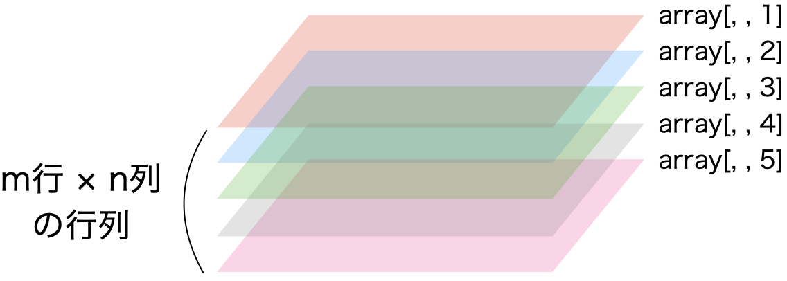

[1] "R is fun!"9 データ構造
9.1 データ構造とは
データ構造 (data structure)とは最小単位であるベクトルを何らかの形で集めたものです。ベクトル自体もデータ構造であり、同じデータ型のベクトルを積み重ねた行列、異なるデータ型の縦ベクトルを横に並べたデータフレームなど、Rでは様々なデータ構造を提供しています。また、R内臓のデータ構造以外にも、パッケージ等で提供される独自のデータ構造もあります。ここではRが基本的に提供している代表的なデータ構造について、その作り方と操作方法について解説します。
9.2 ベクトル (vector)
9.2.1 ベクトルの作り方
Rにおいてベクトルとは同じデータ型が一つ以上格納されているオブジェクトを意味します。たとえば、以下のmyVec1は長さ1のベクトルです。
むろん、2つ以上の文字列、または数字を格納することも可能です。以下のmyVec2は長さ5のベクトルです。
注意すべきところは、ベクトル内の要素は必ず同じデータ型である必要があるということです。たとえば、数字と文字が混在したmyVec3を考えてみましょう。
数字であるはずの1, 2, 3が"で囲まれ、文字列に自動的に変換されていることが分かります。実際に、デーが型を確認してみましょう。
"character"、つまりデータ型が文字列になっていることが分かります。これはcharacter型がnumeric型よりも優先順位が高いからです。それではnumericとlogical型はどうでしょうか。
TRUEが1、FALSEが0となり、自動的にnumeric型になりました。一般的によく使われるデータ型はlogical、numeric、characterですが、優先順位はlogical < numeric < characterの関係になります。ここで重要なのは優先順位ではなく、異なるデータ型が含まれるベクトルの場合、自動的にデータ型が統一されるということです。ベクトルを作成する際は、全ての要素が同じ型になるようにしましょう。
9.2.2 ベクトルの操作
ベクトルの長さ
ベクトルの長さはベクトルに含まれている要素の数です。ベクトルの長さはlength()関数で調べることができます。それでは前節で作成した4つのベクトルの長さを調べてみましょう。
[1] 1[1] 5[1] 6[1] 5それぞれのベクトルの長さは1、5、6、5ということが分かりますね。
要素の抽出
これは既に説明しましたので、第sec-rbasic-extractを参照してください。
ベクトルの加減乗除
ここではnumeric型のベクトルを用いた加減乗除について考えたいと思います。Rにおいてベクトルは自動的に反復作業を行います。たとえば、c(1, 2, 3, 4)というベクトルがあり、ここに5を足すと、ベクトルの全ての要素に対して同じ計算を行います。これは引き算でも、掛け算でも、割り算でも同じです。むろん、べき乗などの様々な操作に対しても同じです。それではmyVec2に対して、5を足したり、引いたり、色々してみましょう。
[1] 6 8 10 11 12[1] -4 -2 0 1 2[1] 5 15 25 30 35[1] 0.2 0.6 1.0 1.2 1.4[1] 1 243 3125 7776 16807また、ベクトル同士の演算も可能です。まず、myVec2と同じ長さを持つmyVec4との計算を考えてみましょう。これは長さが同じであるため、それぞれ同じ位置の要素同士の計算となります。つまり、足し算の場合、myVec2[1]とmyVec4[1]の和、myVec2[2]とmyVec4[2]の和、…といった形です。
[1] 2 5 8 7 7[1] 0 1 2 5 7[1] 1 6 15 6 0[1] 1.000000 1.500000 1.666667 6.000000 Infもし、ベクトルの長さが異なる場合はどうなるでしょう。たとえば、長さ2のベクトルmyVec5とmyVec2の足し算を考えてみましょう。
[1] 1 10Warning in myVec2 + myVec5: longer object length is not a multiple of shorter
object length[1] 2 13 6 16 8警告メッセージは表示されますが、計算自体はできます。同じ長さのベクトル同士なら、同じ位置の要素同士の計算になりますが、この場合は、短い方のベクトルを繰り返すことにより、長さを合わせることになります。myVec5の例だと、c(1, 10, 1, 10, 1)のように扱われます。具体的には以下の表のような関係となります。
myVec6[1] |
myVec6[2] |
myVec6[3] |
myVec6[4] |
myVec6[5] |
|---|---|---|---|---|
myVec2[1] |
myVec2[2] |
myVec2[3] |
myVec2[4] |
myVec2[5] |
| + | + | + | + | + |
myVec5[1] |
myVec5[2] |
myVec5[1] |
myVec5[2] |
myVec5[1] |
実際は長さが異なるベクトル同士の計算を行うことは滅多にありません。例外としては長さ1のベクトルの計算くらいですね。
文字列ベクトルの扱い方はより複雑ですので、第sec-string章で詳細に解説します。
9.3 行列 (matrix)
行列は名前とおり、行と列で構成されたデータ構造です。ただし、我々が一般に考える「表」とは異なる点があります。それは行列内部の要素に制約がある点です。具体的に、行列の要素となり得るデータ型はnumeric、complex、NA型のみです。ここではnumeric型のみで構成された行列の作成および操作方法について解説します。
9.3.1 行列の作り方
行列を作成するにはmatrix()関数を使います。引数として、行列に入る数値と行または列の数は必須です。数値はベクトルであり、行・列の数は整数です。以下のような行列を作るにはいくつかの方法があります。
\[ \left[ \begin{matrix} 1 & 2 & 3 & 4 \\ 5 & 6 & 7 & 8 \\ 9 & 10 & 11 & 12 \end{matrix} \right] \]
[,1] [,2] [,3] [,4]
[1,] 1 2 3 4
[2,] 5 6 7 8
[3,] 9 10 11 12 [,1] [,2] [,3] [,4]
[1,] 1 2 3 4
[2,] 5 6 7 8
[3,] 9 10 11 12いずれも同じ結果が得られます。注意してもらいたいところは、第一引数の書き方です。我々は「左から右へ、そして上から下へ」という順番で読むのになれていますが、Rの行列は「上から下へ、そして左から右へ」の順番です。もし、「左から右へ、そして上から下へ」のような、より我々にとって読みやすい書き方をするためにはもう一つの引数が必要であり、それがbyrow =です。
[,1] [,2] [,3] [,4]
[1,] 1 2 3 4
[2,] 5 6 7 8
[3,] 9 10 11 12むろん、初項1、公差1、最大値12の等差数列ですのて、1:12のような書き方も可能です。
[,1] [,2] [,3] [,4]
[1,] 1 2 3 4
[2,] 5 6 7 8
[3,] 9 10 11 12データ構造も確認してみましょう。
R 4.0.0からの仕様変更により行列型はmatrix構造以外にもarrayの構造も持つようになりました。array型については第sec-datastructure_array章で解説します。
単位行列
最後にちょっと特殊な行列である単位行列 (indetity matrix)の作り方について説明します。単位行列とは行と列の数が同じである正方形の行列ですが、対角線上は全て1、その他は全て0となっている行列です。たとえば大きさが4の単位行列は、
\[ \left[ \begin{matrix} 1 & 0 & 0 & 0 \\ 0 & 1 & 0 & 0 \\ 0 & 0 & 1 & 0 \\ 0 & 0 & 0 & 1 \\ \end{matrix} \right] \]
です。これはmatrix(c(1, 0, 0, 0, 0, 1, 0, 0, 0, 0, 1, 0, 0, 0, 0, 1), nrow = 4)で作成することも可能ですが、diag()関数を使えば簡単に出来ます。サイズが4の単位行列はdiag(4)です。
9.3.2 行列の操作
まず、以下のような行列Aを作ってみましょう。
\[ A = \left[ \begin{matrix} 1 & 2 & 3 & 4 \\ 5 & 6 & 7 & 8 \\ 9 & 10 & 11 & 12 \end{matrix} \right] \]
行列のサイズ
行列の大きさ (行と列の数)を求める際はdim()関数を使います。
結果は長さ2のベクトルですが、1番目の要素が行数、2番目の要素が列数になります。もし、行列の行数のみ確認したい場合はdim(A)[1]、列数ならdim(A)[2]で確認することができます。また、全く同じ機能を持つ関数があり、それがnrow()とncol()関数です。
dim()およびnrow()、ncol()関数は第sec-datastructure-dataframe章で紹介するデータフレームでも使用可能です。
要素の抽出
ベクトルと同様、要素の抽出は[]を使います。ただし、行列は横と縦の2次元構成となりますので、行と列のそれぞれの位置を指定する必要があります。たとえば、Aの2行目、3列目の要素を抽出するためには、
のように書きます。行か列の位置を省略した場合、指定した列・行全てが抽出されます。2行目の要素全てを抽出するならA[2, ]、3列目の要素全てを抽出するならA[, 3]となります。
この場合、返される値のデータ構造はいずれも行列でなく、ベクトルです。確認してみましょう。
例外は複数の行と複数の列を同時に抽出した場合です。たとえば、行列Aの1・2行目と2・3列目の要素を全て抽出するとします。その場合はA[1:2, 2:3]のように書きます。むろん、:を使わずにA[c(1, 2), c(2, 3)]のような書き方も可能です。抽出後、返された結果のデータ構造も確認してみましょう。
この場合、返された結果のデータ構造は行列であることが分かります。
行列の足し算と引き算
行列の足し算 (引き算)には
- 行列内の全要素に対して同じ数字を足す (引く)
- 同じサイズの2つの行列から対応する要素を足す (引く)
2パタンがあります。例えば、行列Aの全要素に5を足す場合は以下のように入力します。
同様に、Aから10を引く場合は-演算子を使います。
二つ目は同じサイズの行列同士の足し算と引き算です。行列Aは3 \(\times\) 4の行列ですので、同じサイズの行列Bを作成してみましょう。
[,1] [,2] [,3] [,4]
[1,] 3 2 1 4
[2,] 5 9 7 11
[3,] 6 12 8 10この行列AとBの足し算はそれぞれ同じ位置の要素同士の和を行列をして返し、これは引き算も同じです。
[,1] [,2] [,3] [,4]
[1,] 4 4 4 8
[2,] 10 15 14 19
[3,] 15 22 19 22 [,1] [,2] [,3] [,4]
[1,] -2 0 2 0
[2,] 0 -3 0 -3
[3,] 3 -2 3 2注意すべき点は、2つの行列は同じ大きさでなければならない点です。たとえば、行列Bの1列から3列までを抽出した3 \(\times\) 3行列Cを作成し、A + Cをしてみましょう。
[,1] [,2] [,3]
[1,] 3 2 1
[2,] 5 9 7
[3,] 6 12 8Error in A + C: non-conformable arraysこのように足し算ができなくなり、これは引き算でも同じです。
行列の掛け算
やや特殊なのは行列の掛け算です。行列Aの全要素を2倍にしたい場合、これは足し算・引き算と同じやり方で十分です。
ただし、問題は行列同士の掛け算です。行列AとBの掛け算といえば、直感的には足し算や引き算同様、同じ位置の要素の積と考えるかも知れません。実際A * Bはそのように計算を行います。
ただし、このような掛け算は「アダマール積 (Hadamard product)」と呼ばれる計算方法であり1、一般的に使う掛け算ではありません。実際、数学において\(A \times B\)はアダマール積を意味すのではなく、アダマール積は\(A \circ B\)または\(A \odot B\)と表記します。
それでは一般的な行列の積は何でしょう。詳しいことは線形代数の入門書に譲りますが、以下のような2つの行列CとDを考えてみましょう。
\[ C = \left[ \begin{matrix} 1 & 2 & 3 \\ 4 & 5 & 6 \end{matrix} \right], D = \left[ \begin{matrix} 2 & 7 & 17 \\ 3 & 11 & 19 \\ 5 & 13 & 23 \end{matrix} \right] \]
行列の大きさが異なりますね。行列Cの大きさは2 \(\times\) 3、Dは3 \(\times\) 3です。実はこれが正しいです。行列の積は\(n \times m\)の行列と\(m \times p\)の行列同士でないと計算できません。\(n\)と\(p\)は同じでも、同じでなくても構いません。その意味で\(C \times D\)は計算可能でも、\(D \times C\)は計算できません。そして、2つの行列の積の大きさは\(n \times p\)です。したがって、\(C \times D\)の大きさは\(2 \times 3\)です。
行列の積がどのように求められるかを確認するために、まず行列CとDを作成してみましょう。
[,1] [,2] [,3]
[1,] 1 2 3
[2,] 4 5 6 [,1] [,2] [,3]
[1,] 2 7 17
[2,] 3 11 19
[3,] 5 13 23この2つの積は%*%演算子で計算されますが、まずその結果から見ましょう。
2行2列の行列ができました。これらの数字、どうやった計算されたのでしょうか。Eの[1, 1]は23であり、[1, 2]は68、[2, 1]は53、[2, 2]は161です。各値は以下のように求まります。
-
E[1, 1]= (C[1, 1]*D[1, 1]) + (C[1, 2]*D[2, 1]) + (C[1, 3]*D[3, 1]) = 23 -
E[1, 2]= (C[1, 1]*D[1, 2]) + (C[1, 2]*D[2, 2]) + (C[1, 3]*D[3, 2]) = 68 -
E[1, 3]= (C[1, 1]*D[1, 3]) + (C[1, 2]*D[2, 3]) + (C[1, 3]*D[3, 3]) = 124 -
E[2, 1]= (C[2, 1]*D[1, 1]) + (C[2, 2]*D[2, 1]) + (C[2, 3]*D[3, 1]) = 53 -
E[2, 2]= (C[2, 1]*D[1, 2]) + (C[2, 2]*D[2, 2]) + (C[2, 3]*D[3, 2]) = 161 -
E[2, 3]= (C[2, 1]*D[1, 3]) + (C[2, 2]*D[2, 3]) + (C[2, 3]*D[3, 3]) = 301
大きさ\(n \times m\)行列Cのi行目j列目の要素を\(C_{i,j}\)と表記し、大きさ\(n \times p\)行列Dのi行目j列目の要素を\(D_{i,j}\)と表記した場合、以下のような関係が成り立ちます。
行列Eのi行目j列目の要素を\(e_{i,j}\)と表記した場合、以下のような関係が成り立ちます。
\[ e_{i, j} = \sum_{k = 1}^m C_{i, k} \cdot D_{k, j}. \]
したがって、行列\(C\)と\(D\)の積は
\[\begin{align} CD = E & = \left[ \begin{matrix} e_{1, 1} & e_{1, 2} & e_{1, 3} \\ e_{2, 1} & e_{2, 2} & e_{2, 3} \end{matrix} \right] \\ & = \left[ \begin{matrix} \sum_{k = 1}^m C_{1, k} \cdot D_{k, 1} & \sum_{k = 1}^m C_{1, k} \cdot D_{k, 2} & \sum_{k = 1}^m C_{1, k} \cdot D_{k, 3} \\ \sum_{k = 1}^m C_{2, k} \cdot D_{k, 1} & \sum_{k = 1}^m C_{2, k} \cdot D_{k, 2} & \sum_{k = 1}^m C_{2, k} \cdot D_{k, 3} \end{matrix} \right]. \end{align}\]
このように業績同士の積はかなり求めるのが面倒ですが、Rを使えば一瞬で終わります。
行列式
行列式 (determinant)は\(n \times n\)の正方行列のみに対して定義される値の一つです。主に一次方程式において解が存在するか否かを判断するために用いられる数値ですが2、その詳しい意味や求め方については線形代数の入門書を参照してください。
行列\(A\)の行列式は一般的に\(\text{det}(A)\)、または\(|A|\)と表記されます。行列式を求めるRの関数はdet()です。それでは適当に正方行列Fを作成し、その行列を求めてみましょう。
[,1] [,2] [,3]
[1,] 2 -6 4
[2,] 7 2 3
[3,] 8 5 -1[1] -144行列Fの行列式は-144です。この場合、以下の一次方程式に何らかの一組の解が存在することを意味します (\(p\), \(q\), \(r\)は任意の実数)。
\[\begin{align} 2x - 6y + 4z = & p, \\ 7x + 2y + 3z = & q, \\ 8x + 5y - 1z = & r. \end{align}\]
しかし、以下のような連立方程式はいかがでしょう。これは二組以上の解が存在する方程式です3。
\[\begin{align} 2x - 6y + 4z = & p, \\ 1x - 3y + 2z = & q, \\ 5x + 9y + 3z = & r. \end{align}\]
実際に行列Gを作成し、det(G)を計算してみましょう。
[,1] [,2] [,3]
[1,] 2 -6 4
[2,] 1 -3 2
[3,] 5 9 3[1] 0\(|G|\)は0であることが分かりますね。
階数
行列の特徴を表す代表的な数値の一つが階数 (rank)です。詳しい説明は省きますが、一次方程式の例だと、階数が行列の行数と一致する場合、一組の解が存在することを意味します。階数を求める方法はqr(行列)$rankであり、行列FとGの階数を確認してみましょう。
どれも3行の行列ですが、行列Fの階数は3、行列Gの階数は2です。Gの階数はGの行数より小さいため、連立方程式に一組の解がないことが分かります。
階数の活用先は様々であり、行列式とは違って、正方行列でなくても計算可能です。
逆行列
逆行列とは掛け算すると単位行列となる行列を意味します。行列\(A\)の逆行列は一般的に\(A^{\prime}\)と表記し、\(A \times A^{\prime} = I\)となります。この逆行列の求め方は非常に複雑であり、一定以上の大きさの行列になると手計算で解くのはほぼ不可能です。しかし、Rでは逆行列を計算するsolve()関数が内蔵されております。
以下の行列\(A\) (A)の逆行列、\(A^{\prime}\) (Ap)を求めてみましょう。そして\(A \times A^{\prime}\)が単位行列になるかまで確認してみます。
[,1] [,2] [,3]
[1,] 1 0 1
[2,] -2 1 0
[3,] 2 -1 1 [,1] [,2] [,3]
[1,] 1 -1 -1
[2,] 2 -1 -2
[3,] 0 1 1 [,1] [,2] [,3]
[1,] 1 0 0
[2,] 0 1 0
[3,] 0 0 1ちゃんと単位行列ができましたね。
転置
行列\(A\)の転置行列は\(A^T\)と表記され、以下のような関係となります。
\[ A = \left[ \begin{matrix} 1 & 2 & 3 \\ 4 & 5 & 6 \\ 7 & 8 & 9 \end{matrix} \right], A^T = \left[ \begin{matrix} 1 & 4 & 7 \\ 2 & 5 & 8 \\ 3 & 6 & 9 \end{matrix} \right] \]
正方行列の場合、対角成分を除き、全ての要素が対角成分を中心に反転していることが分かりますね。このような転置行列の作成にはt()関数を使います。それでは行列Aとその転置行列Atを作ってみましょう。
[,1] [,2] [,3]
[1,] 1 2 3
[2,] 4 5 6
[3,] 7 8 9ちなみに転置行列は正方行列でなくても作成できます。
9.4 データフレーム (data.frame)
データフレームはデータ分析の際に最もよく見るデータ構造です。我々が一般的に考える表形式のデータはデータフレームです。行列も見た目は表に近いですが、行列は中身の要素がnumericまたはcomplex型に限定されるに対して4、データフレームはcharacterやfactor、Dateなど様々なデータ型が許容されます。
9.4.1 データフレームの作成
まずは、 表 tbl-dataframe_example1 のようなデータフレームを作成して見ましょう。データフレームを作成する際はdata.frame()関数を使います。
| ID | Name | Math | Stat |
|---|---|---|---|
| 1 | Yanai | 50 | 25 |
| 2 | Song | 90 | 5 |
| 3 | Shigemura | 100 | 100 |
| 4 | Tani | 80 | 85 |
myDF <- data.frame(
ID = 1:4,
Name = c("Yanai", "Song", "Shigemura", "Tani"),
Math = c(50, 90, 100, 80),
Stat = c(25, 5, 100, 85)
)
myDF ID Name Math Stat
1 1 Yanai 50 25
2 2 Song 90 5
3 3 Shigemura 100 100
4 4 Tani 80 85データ構造を確認してみましょう。
データフレームを作成する際、事前にベクトルを用意してから作成することも可能です。
myDF_ID <- 1:4
myDF_Name <- c("Yanai", "Song", "Shigemura", "Tani")
myDF_Math <- c(50, 90, 100, 80)
myDF_Stat <- c(25, 5, 100, 85)
myDF2 <- data.frame(myDF_ID, myDF_Name, myDF_Math, myDF_Stat)
myDF2 myDF_ID myDF_Name myDF_Math myDF_Stat
1 1 Yanai 50 25
2 2 Song 90 5
3 3 Shigemura 100 100
4 4 Tani 80 85この場合、列の名前はベクトル名そのままになります。もし、列名を指定したい場合は以下のように作成します。
ID Name Math Stat
1 1 Yanai 50 25
2 2 Song 90 5
3 3 Shigemura 100 100
4 4 Tani 80 85以上をコードを考えてみると、データフレームは複数のベクトルを横方向にくっつけたものになります。注意すべき点としては各ベクトルの長さが一致している点です。myDFの場合、4つのベクトルで構成されていますが、全てのベクトルの長さは4です。むろん、長さが異なる場合もデータフレームは作成できます。この場合、長さが足りないベクトルは最も長さが長いベクトルに合わせて繰り返されます。例としてmyDF4を作ってみましょう。
myDF4 <- data.frame(
ID = 1:4,
Name = c("Yanai", "Song", "Shigemura", "Tani"),
Math = c(50, 90, 100, 80),
Stat = c(25, 5, 100, 85),
City = "Kobe",
Food = c("Ramen", "Udon")
)
myDF4 ID Name Math Stat City Food
1 1 Yanai 50 25 Kobe Ramen
2 2 Song 90 5 Kobe Udon
3 3 Shigemura 100 100 Kobe Ramen
4 4 Tani 80 85 Kobe UdonCity列はすべて"Kobe"が入り、Food列は長さが足りない3, 4番目の要素に1, 2番目の要素が代入されます。実際はあまり使わない使い方ですが、ある列の要素が全て同じ場合、このような使い方をすることがあります。
9.4.2 データフレームの操作
データフレームの大きさ
行列と同様、dim()から行と列の数を、nrow()からは行数を、ncol()から列数を計算することができます。
要素の抽出
まず、データフレーム内要素の抽出についてですが、行列型と同じやり方で問題ありません。つまり、[行番号, 列番号]で要素の抽出が可能です。これに加え、データフレームには$を使った抽出方法があります。
まず、行列と同じやり方でmyDF4の2行目、6列目の要素を抽出してみましょう。
行を丸ごと抽出したい場合は、列を指定しません。myDF4の3, 4行目を抽出してみましょう。
ID Name Math Stat City Food
3 3 Shigemura 100 100 Kobe Ramen
4 4 Tani 80 85 Kobe Udon同じやり方で列を抽出すことも可能です。好きな食べ物 (Food)列を抽出してみましょう。
列を抽出する場合は、列名を指定することも可能です。やり方は[, "列名"]による方法、$列名による方法があります。Name列を抽出してみましょう。
[1] "Yanai" "Song" "Shigemura" "Tani" [1] "Yanai" "Song" "Shigemura" "Tani" どれも同じ結果が返されます。後者の方が簡単ですが、一つの列しか抽出できない限界があります。それに比べ、前者はc()を使うことで複数の列を同時に抽出することも可能です。それぞれの場面に応じて使い分けていきましょう。
また、$で列を抽出した場合、抽出されたものはベクトル扱いになるため、[]を使った要素の抽出が可能です。例えばmyDF4のName列の2番目の要素を抽出してみましょう。
あまり意識する必要はありませんが、抽出後のデータ構造について簡単に説明します。データフレームから一部の要素を抽出した結果物は必ずしもデータフレームにはなりません。
| 操作 | 返されるデータ型 | |
|---|---|---|
| 1 | 1行を抽出する | データフレーム |
| 2 | 複数の行を抽出する | データフレーム |
| 3 | 1列を抽出する | ベクトル |
| 4 | 複数の列を抽出する | データフレーム |
注目するのは3番目の例ですが、これはRの最小単位がベクトルであり、データフレームもベクトルの集めだからです。データフレームは「縦」ベクトルを横に並べたものです。もし、行を抽出した場合、その要素は全て同じデータ型だとは限りません。実際、myDF4の3行目を抽出しても、中にはcharacter型とnumeric型と混在しています。しかし、一つの列のみを抽出した場合、全ての要素は必ず同じデータ型となるため、ベクトルとして扱うことが可能です。同様に、行列型の一列を抽出した場合も結果はベクトルとなります。ただし、行列は全ての要素がNAを除き、同じであるため、一行を抽出しても結果はベクトル型となります。
セルの修正
特定のセルの修正する方法は簡単です。先ほど、データフレームから一つのセルを取り出すにはデータフレーム名[行番号, 列番号]だけでした。そのセルを修正するにはベクトルと同様、データフレーム名[行番号, 列番号] <- 新しい値のように入力します。
たとえば、重村さんが数学試験で不正が発覚し、0点になるとします。そのためには、myDF4の3行・3列目の要素を0に修正する必要がありますが、以下のようなコマンドで修正可能です。
ID Name Math Stat City Food
1 1 Yanai 50 25 Kobe Ramen
2 2 Song 90 5 Kobe Udon
3 3 Shigemura 0 100 Kobe Ramen
4 4 Tani 80 85 Kobe Udonちゃんと重村さんの数学点数が0点になりました。ざまあみろですね！
もう一つのやり方としては、一旦、列を取り出し、ベクトルにおける要素の置換操作を行う方法です。矢内大先生が神戸から離れ、高知県へ移住し、小物の宋は京都へ移住したとします。myDF4のCity列の1・2番目要素をc("Kochi", "Kyoto")に修正する必要があります。そのためには以下のように入力します。
ID Name Math Stat City Food
1 1 Yanai 50 25 Kochi Ramen
2 2 Song 90 5 Kyoto Udon
3 3 Shigemura 0 100 Kobe Ramen
4 4 Tani 80 85 Kobe Udon修正した要素が反映されました。
列の追加・修正
まずは、データフレームに列を追加する方法について紹介します。方法は
データフレーム名$新しい列名 <- ベクトルのように入力するだけです。たとえば、4人を対象に英語試験を行い、それぞれの点数が95点、50点、80点、5点だとします。この英語試験の成績をmyDF4のEnglish列として追加してみましょう。
むろん、以下のように予めベクトルを作成してから代入することも可能です。
English_Score <- c(95, 50, 80, 5)
myDF4$English <- English_Scoreどれも同じ結果になりますが、結果を見てみましょう。
ID Name Math Stat City Food English
1 1 Yanai 50 25 Kochi Ramen 95
2 2 Song 90 5 Kyoto Udon 50
3 3 Shigemura 0 100 Kobe Ramen 80
4 4 Tani 80 85 Kobe Udon 5「EnglishがStatの次じゃなくて気持ち悪い！」と思う方もいるかも知れませんが、列順番の変更については第sec-datahandling1章で解説します。まずは、これで我慢しましょう。
次は、列の置換についてです。実はよく考えてみるとこれは列の追加と全く同じです。たとえば、英語試験において配点が5点の問題にミスが見つかり、全生徒の英語成績に5点を上乗せるとします。そのためにはベクトルmyDF4$Englishの全ての要素に5を足し、それをもう一回myDf4$Englishに代入すれば良いです。
ID Name Math Stat City Food English
1 1 Yanai 50 25 Kochi Ramen 100
2 2 Song 90 5 Kyoto Udon 55
3 3 Shigemura 0 100 Kobe Ramen 85
4 4 Tani 80 85 Kobe Udon 10これでEnglish列の修正ができました。
行の追加・修正はなるべくしない
行の追加はなるべくしない方が良いです。その理由について考えてみましょう。今は4人の生徒のデータがありますが、ここにもう一人の生徒のデータを追加するとします。そのためにはmyDF4の5行目に生徒のID、名前、数学・統計学の成績、居住地域、好きな食べ物、英語の成績を入れれば良いでしょう。新しい学生、吐合さんの数学・統計学・英語成績は50, 50, 50点、居住地域は芦屋、好きな食べ物は二郎だとします。早速追加してみましょう。
ID Name Math Stat City Food English
1 1 Yanai 50 25 Kochi Ramen 100
2 2 Song 90 5 Kyoto Udon 55
3 3 Shigemura 0 100 Kobe Ramen 85
4 4 Tani 80 85 Kobe Udon 10
5 5 Hakiai 50 50 Ashiya Jiro 50問題なく吐合さんのデータが追加されたように見えますが、実は問題があります。myDF4のStat列を取り出して見ましょう。
異常に気づきましたか。それではこのベクトルのデータ型を確認してみましょう。
元々はnumeric型であるはずのStat列がcharacter型になりました。その理由は明白です。ベクトルの要素は全て同じデータ型だからです。そして、numericとcharacter型が混在している場合は、自動的に（優先順位の高い）character型になります。以下の2つのコマンドが同じであることは理解できるでしょう。
# Case 1
myDF4[5, ] <- c(5, "Hakiai", 50, 50, "Ashiya", "Jiro", 50)
# Case 2
Hakiai_Data <- c(5, "Hakiai", 50, 50, "Ashiya", "Jiro", 50)
myDF4[5, ] <- Hakiai_DataここのベクトルHakiai_Dataが強制的にcharacter型になるため、myDF4の5行目の要素は全てcharacter型になります。また、データフレームは縦ベクトルを横に並べたものであるなら、myDF4$Math列にcharacter型の要素が追加されることによって、列も全てcharacter型になってしまいます。したがって、データフレームにcharacter型とnumeric型が混在している状況において新しい行の追加は全ての要素をcharacter型に変えてしまうのです。むろん、データフレームの全要素がnumeric型であれば、このような問題は生じますが、numeric型のみで構成されたデータフレームはなかなかないでしょう。
5行目を消しても問題は解決しないので、結局は列のデータ型を強制的に変更する必要があります。
myDF4$ID <- as.numeric(myDF4$ID)
myDF4$Math <- as.numeric(myDF4$Math)
myDF4$Stat <- as.numeric(myDF4$Stat)
myDF4$English <- as.numeric(myDF4$English)
class(myDF4$Math)[1] "numeric"これでやっと元通りになりましたね。
どうしても行を追加したい場合は、以下のようなやり方もありますが、おすすめはできません。
myDF4[6, ] <- rep(NA, 7) # myDF4の6行目を追加し、7つの欠損値を代入
myDF4$ID[6] <- 6 # myDF4$IDの6番目の要素に6を代入
myDF4$Name[6] <- "Yukawa" # myDF4$Nameの6番目の要素にYukawaを代入
myDF4$Math[6] <- 80 # 以下、省略
myDF4$Stat[6] <- 30
myDF4$City[6] <- "Hiroshima"
myDF4$Food[6] <- "Ramen"
myDF4$English[6] <- 90
myDF4 ID Name Math Stat City Food English
1 1 Yanai 50 25 Kochi Ramen 100
2 2 Song 90 5 Kyoto Udon 55
3 3 Shigemura 0 100 Kobe Ramen 85
4 4 Tani 80 85 Kobe Udon 10
5 5 Hakiai 50 50 Ashiya Jiro 50
6 6 Yukawa 80 30 Hiroshima Ramen 90[1] "numeric"欠損値 (NA)はどのようなデータ型にも対応できる特徴を利用すれば、このような操作も可能ですが、かなり面倒です。そもそも実際の分析において任意の行を追加することは滅多にないはずです。
9.4.3 tibble型
data.frameに似ているデータ型としてtibbleがあります。これはR内蔵のデータ型ではありませんが、Rの必須パッケージとも言えるtidyverse内に含まれているデータ型であり、これからもどんどん普及していくでしょう。tibbleとdata.frameの違いを説明するために、同じデータをそれぞれのデータ型で読み込んでみましょう。
とりあえずread.csv()で読み込み、VoteDF1と名付けましょう。
続いてVoteDF1をas_tibble()関数を使ってtibble型にし、VoteDF2と名付けます。そして、それぞれのデータ構造を確認してみます。
[1] "data.frame"[1] "tbl_df" "tbl" "data.frame"全く同じデータですが、VoteDF2にはtblとtbl_dfというクラスが追加されていることが分かります。それではデータの中身を覗いてみましょう。まずは、data.frame型から
ID Pref Zaisei Over65 Under30 LDP DPJ Komei Ishin JCP SDP
1 1 北海道 0.41903 29.09 24.70 32.82 30.62 13.41 3.43 11.44 1.68
2 2 青森県 0.33190 30.14 23.92 40.44 24.61 12.76 3.82 8.92 3.41
3 3 岩手県 0.34116 30.38 24.48 34.90 22.44 8.61 5.16 11.24 5.29
4 4 宮城県 0.59597 25.75 27.29 36.68 25.40 13.42 3.97 9.99 3.62
5 5 秋田県 0.29862 33.84 21.35 43.46 22.72 11.19 5.17 7.56 5.12
6 6 山形県 0.34237 30.76 24.75 42.49 21.47 11.78 4.30 7.60 5.20
7 7 福島県 0.50947 28.68 25.23 33.82 28.31 10.96 3.43 10.45 3.24
8 8 茨城県 0.63309 26.76 26.60 40.64 18.95 15.05 6.67 10.07 2.88
9 9 栃木県 0.62166 25.87 26.78 38.78 21.63 12.42 10.88 7.00 2.05
10 10 群馬県 0.60277 27.60 26.59 42.06 19.31 13.85 5.61 10.00 2.44
11 11 埼玉県 0.76548 24.82 27.66 32.30 20.40 16.00 7.23 13.94 1.91
12 12 千葉県 0.77694 25.86 26.71 37.79 21.70 13.98 5.46 11.34 2.01
13 13 東京都 1.00321 22.67 27.39 34.37 19.76 11.44 7.34 14.21 2.82
14 14 神奈川県 0.91745 23.86 27.84 34.92 21.49 12.18 7.77 12.46 2.79
15 15 新潟県 0.43519 29.86 25.23 43.66 25.25 8.27 4.39 8.00 3.76
16 16 富山県 0.45307 30.54 24.88 44.16 24.22 9.81 5.06 5.79 5.02
17 17 石川県 0.46812 27.87 27.25 48.09 18.54 11.00 6.36 7.07 2.36
18 18 福井県 0.37820 28.63 26.70 45.29 17.52 10.91 13.09 5.66 2.09
19 19 山梨県 0.37876 28.41 26.37 37.36 28.04 12.83 4.32 9.20 1.67
20 20 長野県 0.47586 30.06 25.52 35.27 27.69 10.70 4.23 12.61 3.59
21 21 岐阜県 0.52358 28.10 27.22 39.71 23.62 12.33 5.51 9.41 1.98
22 22 静岡県 0.70999 27.79 26.28 37.47 24.13 12.68 7.99 9.59 2.22
23 23 愛知県 0.92052 23.79 29.44 34.32 29.27 11.67 6.41 9.55 2.14
24 24 三重県 0.57544 27.90 26.74 33.67 34.23 13.07 5.09 7.59 1.76
25 25 滋賀県 0.53932 24.15 29.96 37.85 22.25 9.57 12.82 11.44 1.41
26 26 京都府 0.56713 27.51 27.76 31.18 19.93 12.25 11.16 18.50 1.55
27 27 大阪府 0.74980 26.15 27.55 22.12 9.30 16.39 34.86 11.37 1.25
28 28 兵庫県 0.62062 27.09 26.94 31.71 15.84 15.37 19.50 10.30 2.01
29 29 奈良県 0.41269 28.70 26.86 33.51 18.41 13.44 18.94 9.17 1.66
30 30 和歌山県 0.31955 30.89 25.08 39.61 12.10 18.00 13.51 10.43 1.23
31 31 鳥取県 0.25486 29.71 25.86 41.62 20.93 16.71 5.98 7.14 2.56
32 32 島根県 0.24170 32.48 24.59 48.24 19.14 13.43 4.75 7.50 2.51
33 33 岡山県 0.50096 28.66 27.44 37.87 19.91 17.18 10.67 7.87 1.60
34 34 広島県 0.58581 27.53 27.46 39.93 18.53 15.20 9.69 8.52 2.35
35 35 山口県 0.42560 32.07 24.91 46.75 17.27 16.50 5.31 7.39 1.78
36 36 徳島県 0.32018 30.95 24.31 38.44 17.72 16.87 9.46 9.10 1.81
37 37 香川県 0.46060 29.93 25.29 44.07 16.60 15.14 6.20 7.56 5.07
38 38 愛媛県 0.41181 30.62 24.75 43.57 19.28 14.82 6.77 6.97 2.40
39 39 高知県 0.24472 32.85 23.60 37.01 16.95 15.83 3.93 17.41 2.91
40 40 福岡県 0.61836 25.90 28.21 36.52 19.08 17.15 7.03 10.78 3.33
41 41 佐賀県 0.32938 27.68 27.97 43.53 21.10 15.48 4.85 5.67 4.16
42 42 長崎県 0.31562 29.60 25.84 41.70 20.68 16.86 5.12 6.27 3.48
43 43 熊本県 0.38688 28.78 27.18 46.54 19.29 15.27 4.53 6.32 2.60
44 44 大分県 0.35828 30.45 25.65 39.44 18.37 13.26 4.42 6.85 13.05
45 45 宮崎県 0.32034 29.49 26.26 40.11 14.50 17.11 5.74 7.27 6.81
46 46 鹿児島県 0.32140 29.43 26.04 45.97 16.19 14.49 6.47 6.52 3.62
47 47 沖縄県 0.31535 19.63 33.37 27.82 13.29 15.09 7.66 15.64 12.13つづいて、tibble型
# A tibble: 47 × 11
ID Pref Zaisei Over65 Under30 LDP DPJ Komei Ishin JCP SDP
<int> <chr> <dbl> <dbl> <dbl> <dbl> <dbl> <dbl> <dbl> <dbl> <dbl>
1 1 北海道 0.419 29.1 24.7 32.8 30.6 13.4 3.43 11.4 1.68
2 2 青森県 0.332 30.1 23.9 40.4 24.6 12.8 3.82 8.92 3.41
3 3 岩手県 0.341 30.4 24.5 34.9 22.4 8.61 5.16 11.2 5.29
4 4 宮城県 0.596 25.8 27.3 36.7 25.4 13.4 3.97 9.99 3.62
5 5 秋田県 0.299 33.8 21.4 43.5 22.7 11.2 5.17 7.56 5.12
6 6 山形県 0.342 30.8 24.8 42.5 21.5 11.8 4.3 7.6 5.2
7 7 福島県 0.509 28.7 25.2 33.8 28.3 11.0 3.43 10.4 3.24
8 8 茨城県 0.633 26.8 26.6 40.6 19.0 15.0 6.67 10.1 2.88
9 9 栃木県 0.622 25.9 26.8 38.8 21.6 12.4 10.9 7 2.05
10 10 群馬県 0.603 27.6 26.6 42.1 19.3 13.8 5.61 10 2.44
# … with 37 more rows同じデータですが、表示画面がやや異なります。data.frameは全ての列と行が表示されましたが、tibbleの場合、「画面に収まる」程度しか表示されません。表示されなかった行や列に関しては最後に表示されています。たとえば、VoteDF2の場合、下段にこのように書かれていますね (画面の大きさによって変わります)。
## # … with 37 more rows, and 1 more variable: SDP <dbl>これは表示されなかった行が37行あり、SDPという変数も表示されていないということです。他の違いとしては、tibbleの場合、最初にデータのサイズ (47行11列)が、各変数名の下にデータ型 (<int>、<chr>、<dbl>など)が表示されるという点です。
本書はtibbleとdata.frameを区別して解説はしませんが、一部の章・節においてはtibbleを念頭において解説をします。tibble型の作り方は先ほどのようにas_tibble()使う方法もありますが、readr::read_csv()を使う方法もあります5。read_csv()を使うと各列がどのようなデータ型として読み込まれたかも表示されるので便利です。readrパッケージはtidyverseに含まれているため、普段では以下のような使い方で十分です。
Rows: 47 Columns: 11
── Column specification ────────────────────────────────────────────────────────
Delimiter: ","
chr (1): Pref
dbl (10): ID, Zaisei, Over65, Under30, LDP, DPJ, Komei, Ishin, JCP, SDP
ℹ Use `spec()` to retrieve the full column specification for this data.
ℹ Specify the column types or set `show_col_types = FALSE` to quiet this message.[1] "spec_tbl_df" "tbl_df" "tbl" "data.frame" tibbleとdata.frameの最も大きな違いは、data.frameの一つのセルには長さ1のベクトルしか入らない一方、tibbleは何でも入るという点です。つまり、tibbleなら一つのセルに数字や文字列だけでなく、長さ2以上のベクトル、後述するリスト型、行列、さらにはtibbleも入れることが出来ます。これについては本書の中盤以降に解説します。
本書で「データフレーム」と書いた場合、それはtibbleでも適用可能です。ただし、tibbleと明示した場合、データフレームでは適用不可能です。
9.5 リスト (list)
リスト型は「様々なデータ構造を集めたもの」です。これは複数のデータフレームが格納されたオブジェクト、複数のベクトルが格納されたオブジェクト、行列とデータフレームが混在したオブジェクトなどを意味します。また、リスト型データはリスト型データを含むことも可能であり、非常に柔軟なデータ構造です。
9.5.1 リスト型データの作成
ここではまず、2つのデータフレームを含むリストを作成してみます。それぞれのデータフレームはFIFA国別サッカーランキングであり6、本書のサンプルデータのFIFA_Women.csvとFIFA_Men.csvです。まずは、2つのデータを読み込み、Soccer_WとSoccer_Mという名のオブジェクトに格納しましょう。また、ここでは単に例を見せるだけなので、全データを利用するのではなく、最初の10行のみを利用します。
リストの作成にはlist()関数に入れたいオブジェクト名を指定するだけです。それではList1という名前でSoccer_WとSoccer_Mデータフレームを入れてみましょう。格納後はList1のデータ構造をclass()で確認します
[1] "list"[[1]]
ID Team Rank Points Prev_Points Confederation
1 1 Albania 75 1325 1316 UEFA
2 2 Algeria 85 1271 1271 CAF
3 3 American Samoa 133 1030 1030 OFC
4 4 Andorra 155 749 749 UEFA
5 5 Angola 121 1117 1117 CAF
6 6 Antigua and Barbuda 153 787 787 CONCACAF
7 7 Argentina 32 1659 1659 CONMEBOL
8 8 Armenia 126 1103 1104 UEFA
9 9 Aruba 157 724 724 CONCACAF
10 10 Australia 7 1963 1963 AFC
[[2]]
ID Team Rank Points Prev_Points Confederation
1 1 Afghanistan 149 1052 1052 AFC
2 2 Albania 66 1356 1356 UEFA
3 3 Algeria 35 1482 1482 CAF
4 4 American Samoa 192 900 900 OFC
5 5 Andorra 135 1082 1082 UEFA
6 6 Angola 124 1136 1136 CAF
7 7 Anguilla 210 821 821 CONCACAF
8 8 Antigua and Barbuda 126 1127 1127 CONCACAF
9 9 Argentina 9 1623 1623 CONMEBOL
10 10 Armenia 102 1213 1213 UEFA一つのオブジェクトに2つのデータフレームが入っていますね。これは2つのデータフレームで構成された長さ2のリストです。ただし、どちらが女性ランキングで、どちらが男子ランキングか区別が難しいです。この場合、各データフレームに名前を付けることも可能です。
$Women
ID Team Rank Points Prev_Points Confederation
1 1 Albania 75 1325 1316 UEFA
2 2 Algeria 85 1271 1271 CAF
3 3 American Samoa 133 1030 1030 OFC
4 4 Andorra 155 749 749 UEFA
5 5 Angola 121 1117 1117 CAF
6 6 Antigua and Barbuda 153 787 787 CONCACAF
7 7 Argentina 32 1659 1659 CONMEBOL
8 8 Armenia 126 1103 1104 UEFA
9 9 Aruba 157 724 724 CONCACAF
10 10 Australia 7 1963 1963 AFC
$Men
ID Team Rank Points Prev_Points Confederation
1 1 Afghanistan 149 1052 1052 AFC
2 2 Albania 66 1356 1356 UEFA
3 3 Algeria 35 1482 1482 CAF
4 4 American Samoa 192 900 900 OFC
5 5 Andorra 135 1082 1082 UEFA
6 6 Angola 124 1136 1136 CAF
7 7 Anguilla 210 821 821 CONCACAF
8 8 Antigua and Barbuda 126 1127 1127 CONCACAF
9 9 Argentina 9 1623 1623 CONMEBOL
10 10 Armenia 102 1213 1213 UEFAこれでどれが女性ランキングか、男性ランキングかが区別しやすくなりました。ここでは2つのデータフレームを入れましたが、様々なデータ構造が混在したリストも可能です。様々なデータ構造が混在したリストを自分で作成する場面はあまりありません。自分で作成した独自クラスを利用するパッケージを開発する際はよく使いますが、ここでは省略します。ただし、様々なデータ構造が含まれたリスト型を見ることはよくあります。たとえば、lm()関数で回帰分析を行った際、その結果はリスト型であり、中にはベクトル、データフレーム、リストなどが混在しています。これについては今後詳細に解説していきたいと思います。
9.5.2 リスト型データの操作
リスト型の中身は何でもあり得るので、なんらかの操作方法があるわけではありません。リスト型の操作というのはリスト内の要素をどのように抽出するかであり、各要素 (データフレーム、行列、ベクトルなど)の操作はこれまで説明してきた方法と同じです。したがって、ここではリストを構成する要素を抽出する方法についてのみ解説します。
要素の番号を利用する方法
List1は各要素に名前が付いていないため、番号で抽出します。たとえば、あるリストのi番目の要素を抽出するにはリスト名[[i]]で抽出します。[]ではなく、[[]]であることに注意してください。それではList1の1番目の要素を抽出してみましょう。
ID Team Rank Points Prev_Points Confederation
1 1 Albania 75 1325 1316 UEFA
2 2 Algeria 85 1271 1271 CAF
3 3 American Samoa 133 1030 1030 OFC
4 4 Andorra 155 749 749 UEFA
5 5 Angola 121 1117 1117 CAF
6 6 Antigua and Barbuda 153 787 787 CONCACAF
7 7 Argentina 32 1659 1659 CONMEBOL
8 8 Armenia 126 1103 1104 UEFA
9 9 Aruba 157 724 724 CONCACAF
10 10 Australia 7 1963 1963 AFCこのようにList1内の1番目のデータが抽出されました。こちらのデータ構造は何でしょうか。
既に予想したかと思いますが、データフレームとして抽出されました。ここから更に、3行目のデータを抽出するには、[[]]の後に[3, ]を付けます。
先ほどリストの要素の抽出には「[]でなく、[[]]です」と申しましたが、実は[]も使用可能です。やってみましょう。
[[1]]
ID Team Rank Points Prev_Points Confederation
1 1 Albania 75 1325 1316 UEFA
2 2 Algeria 85 1271 1271 CAF
3 3 American Samoa 133 1030 1030 OFC
4 4 Andorra 155 749 749 UEFA
5 5 Angola 121 1117 1117 CAF
6 6 Antigua and Barbuda 153 787 787 CONCACAF
7 7 Argentina 32 1659 1659 CONMEBOL
8 8 Armenia 126 1103 1104 UEFA
9 9 Aruba 157 724 724 CONCACAF
10 10 Australia 7 1963 1963 AFC[[]]を使った抽出とあまり変わらないですね。しかし、重要な違いが一つあります。それはデータ構造です。
[]で抽出したリストの要素のデータ構造もまたリスト型です。この場合、先ほどのように[x, ]を使って、x行目のデータを抽出することはできません。なぜなら、[行, 列]による要素の抽出はデータフレームのためのものであって、リスト型のためのものではないからです。
このようにエラーが表示されます。
要素の名前を利用する方法
List2のようにリストの要素に名前を付けた場合、これまでの方法に加え[["要素名"]]と$要素名を使った操作が可能です7。List2から男子ランキング (Men)を抽出してみましょう。
ID Team Rank Points Prev_Points Confederation
1 1 Afghanistan 149 1052 1052 AFC
2 2 Albania 66 1356 1356 UEFA
3 3 Algeria 35 1482 1482 CAF
4 4 American Samoa 192 900 900 OFC
5 5 Andorra 135 1082 1082 UEFA
6 6 Angola 124 1136 1136 CAF
7 7 Anguilla 210 821 821 CONCACAF
8 8 Antigua and Barbuda 126 1127 1127 CONCACAF
9 9 Argentina 9 1623 1623 CONMEBOL
10 10 Armenia 102 1213 1213 UEFA ID Team Rank Points Prev_Points Confederation
1 1 Afghanistan 149 1052 1052 AFC
2 2 Albania 66 1356 1356 UEFA
3 3 Algeria 35 1482 1482 CAF
4 4 American Samoa 192 900 900 OFC
5 5 Andorra 135 1082 1082 UEFA
6 6 Angola 124 1136 1136 CAF
7 7 Anguilla 210 821 821 CONCACAF
8 8 Antigua and Barbuda 126 1127 1127 CONCACAF
9 9 Argentina 9 1623 1623 CONMEBOL
10 10 Armenia 102 1213 1213 UEFAどれも結果は同じです。また、それぞれのデータ構造もデータフレームです。
したがって、[行番号, 列番号]のようにデータフレームの操作が可能です。Men要素から10行目のデータを抽出してみましょう。
ID Team Rank Points Prev_Points Confederation
10 10 Armenia 102 1213 1213 UEFA ID Team Rank Points Prev_Points Confederation
10 10 Armenia 102 1213 1213 UEFAもちろん、名前を付けた場合であっても、要素の番号を利用した操作も可能です。自分でリスト型を作成する際には各要素に名前を付けた方が分かりやすくて良いでしょう。
9.6 配列 (array)
配列は行列の拡張版であり、行列は配列の特殊な形です。これまでのRでは行列と配列は区別されてきましたが、R 4.0.0以降、行列は配列の属するデータ構造となりました。
配列型は簡単にいうと、同じサイズの行列を数枚重ねたものです。 図 fig-structure_array は配列型のイメージを表したものです。

したがって、配列型は行と列以外にも、層の要素も持つことになります。複数の行列で構成されている点では、リスト型と類似していますが、配列型は同じサイズの行列のみで構成されている点が特徴です。
配列型は普段、扱う機会があまりありませんが、マルコフ連鎖モンテカルロ法 (MCMC)でベイジアン推定を行った後の事後分布データは配列型で格納される場合があります。
9.6.1 配列型データの作成
各行列は3行4列とし、4層構造とします。まずは、同じサイズの行列を作成し、それぞれMat1、Mat2、Mat3、Mat4と名付けます。
sample()関数は初めてですね。これは与えられたベクトルの要素から無作為に要素を抽出する関数です。sample(1:12, n)ならc(1, 2, 3, 4, 5, 6, 7, 8, 9, 10, 11,1 2)から無作為にn個の要素を抽出するという意味です。replace = TRUEを指定すると、反復抽出、つまり、一回抽出された要素であっても抽出される可能性があることを意味します。デフォルトはFALSEですが、この場合、一旦抽出された要素は二度と抽出されません。それではそれぞれの行列の中身を見てみましょう。
[,1] [,2] [,3] [,4]
[1,] 3 8 2 4
[2,] 11 2 8 11
[3,] 10 7 6 5 [,1] [,2] [,3] [,4]
[1,] 1 9 3 1
[2,] 10 6 4 3
[3,] 6 9 3 5 [,1] [,2] [,3] [,4]
[1,] 2 2 7 5
[2,] 4 8 5 7
[3,] 12 9 9 10 [,1] [,2] [,3] [,4]
[1,] 8 2 12 12
[2,] 6 5 11 6
[3,] 1 6 12 9配列型データを作成するにはarray()関数を使います。引数としては行列名をc()で繋ぎ8、dim =でarrayの大きさを指定するだけです。配列を作成した後はそのデータ構造も確認してみましょう。
dim = c(m, n, z)の部分ですが、これは「m行n列の行列がz枚重ねる」という意味です。今回は3行4列の行列を4枚重ねるのでdim = c(3, 4, 4)です。それではArray1の中身を見てみます。
, , 1
[,1] [,2] [,3] [,4]
[1,] 3 8 2 4
[2,] 11 2 8 11
[3,] 10 7 6 5
, , 2
[,1] [,2] [,3] [,4]
[1,] 1 9 3 1
[2,] 10 6 4 3
[3,] 6 9 3 5
, , 3
[,1] [,2] [,3] [,4]
[1,] 2 2 7 5
[2,] 4 8 5 7
[3,] 12 9 9 10
, , 4
[,1] [,2] [,3] [,4]
[1,] 8 2 12 12
[2,] 6 5 11 6
[3,] 1 6 12 9このように一つのオブジェクト内に複数の行列が格納されたオブジェクトが生成されます。
9.6.2 配列型データの操作
配列型データの操作は行列型に似ていますが、層というもう一つの次元があるため、行列名[行番号, 列番号]ではなく、配列名[行番号, 列番号, 層番号]を使います。たとえば、Array1の3番目の行列を抽出したい場合、Array1[, , 3]と入力します。
また、2番目の行列の3行目・1列目の要素を抽出するならArray1[3, 1, 2]と入力します。
配列型における操作の特徴の一つは全ての行列が同じ大きさを持つため、層を貫通した操作ができるという点です。たとえば、全ての層の2行目を抽出するなら、層番号を指定せず、行番号のみで抽出します。
ただ、返された結果は配列型でなく行列型であることに注意しましょう。たとえば、1番目の行列の2行目の要素は11, 2, 8, 11ですが、これは先ほど抽出された行列の1列目に該当します。また、2番目の行列の2行目の要素は10, 6, 4, 3であり、これは先ほどの抽出された行列の2列目となります。全層において特定の一列を抽出しても同じです。これは各層において抽出されたデータが行列でなく、ベクトルだからです。
一方、複数の行または列を抽出した場合、結果は配列型です。Array1の各層から1・2行目と1・2列目の要素、つまり大きさが2 \(\times\) 2の行列を抽出してみましょう。
, , 1
[,1] [,2]
[1,] 3 8
[2,] 11 2
, , 2
[,1] [,2]
[1,] 1 9
[2,] 10 6
, , 3
[,1] [,2]
[1,] 2 2
[2,] 4 8
, , 4
[,1] [,2]
[1,] 8 2
[2,] 6 5このように各層において抽出されたデータが行列だからです。自分の操作から得られた結果がどのようなデータ型・データ構造かを予め知っておくことで分析の効率が上がるでしょう。
行列に名前を付けたい
今回は各行列に1, 2, 3, 4という番号のみ割り当てましたが、実は行列に名前を付けることも可能です。そのためには配列データ作成時、dimnames =引数を指定する必要があります。
dimnames =引数は必ず長さ3のリスト型である必要があります。1番目と2番目の要素は行名と列名ですが、行列において一般的に使われないため、ここではNULLにし、3番目の要素、つまり各層の名前だけを指定します。ここではそれぞれの層をM1、M2、M3、M4と名付けました。ここでM4のみを抽出する場合は、以下のように操作します。
むろん、これまでと同様、番号で抽出することも可能です。
私たちのR - 9 データ構造 私たちのR: ベストプラクティスの探求 私たちのR: ベストプラクティスの探求 私たちのR
他にも要素ごとの積 (element-wise product)、シューア積 (Schur product)と呼ばれたりします。↩︎
行列式が0でない場合において一次方程式には一組の解があります。↩︎
なぜなら2行目が1行目の0.5倍になっているからです。↩︎
NAも可能です。↩︎tibble型を直接作成するにはtibble()関数を使いますが、data.frame()と同じ使い方で問題ありません。他にもtribble()関数を使った方法もありますが、詳細は?tribbleで確認してください。↩︎厳密には国別ではありません。イギリスの場合、イングランド、スコットランド、北アイルランド、ウェールズがそれぞれ独立したチームとしてFIFAに加盟しています。↩︎
["要素名"]で抽出することも可能ですが、この場合、返される結果はリスト型になります。↩︎